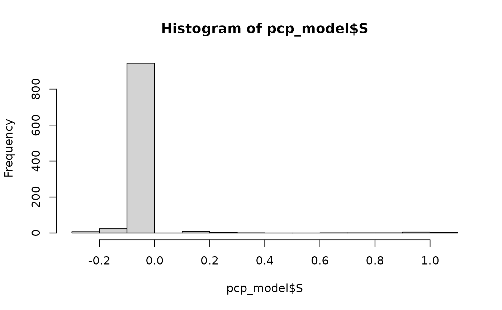
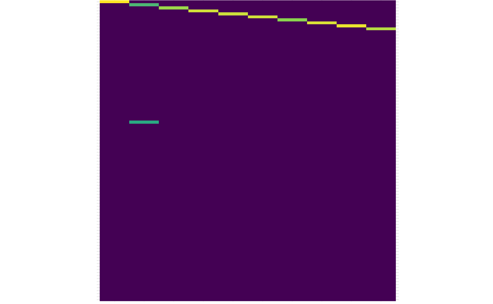

Quickstart: applying PCP to a simulated environmental mixture
Source:vignettes/pcp-quickstart.Rmd
pcp-quickstart.RmdIn this vignette, we will see how to leverage the functions in
pcpr to:
- Simulate and explore a simple environmental mixture dataset;
- Determine the best PCP algorithm to employ with the simulated data;
- Tune PCP’s parameters using a cross-validated grid search; and
- Evaluate PCP’s performance against the simulated ground truth mixture model.
We start by loading and attaching the pcpr package to
our current R session.
Let’s also write a quick helper function that will enable us to visualize the matrices we will be working with throughout this vignette as heatmaps:
library(magrittr) # for the pipe %>%
library(ggplot2) # for plotting
plot_matrix <- function(D, ..., lp = "none", title = NULL) {
D <- t(D)
if (is.null(colnames(D))) colnames(D) <- paste0("C", 1:ncol(D))
data.frame(D) %>%
dplyr::mutate(x = paste0("R", 1:nrow(.))) %>%
tidyr::pivot_longer(tidyselect::all_of(colnames(D)), names_to = "y", values_to = "value") %>%
dplyr::mutate(x = factor(x, levels = unique(x)), y = factor(y, levels = unique(y))) %>%
ggplot(aes(x = x, y = y, fill = value)) +
geom_raster() +
scale_y_discrete(limits = rev) +
coord_equal() +
scale_fill_viridis_c(na.value = "white", ...) +
theme_minimal() +
theme(
axis.text.x = element_blank(),
axis.ticks.x = element_blank(),
axis.text.y = element_blank(),
axis.ticks.y = element_blank(),
axis.title.x = element_blank(),
axis.title.y = element_blank(),
legend.position = lp,
plot.margin = margin(0, 0, 0, 0),
aspect.ratio = 1
) +
ggtitle(title)
}Simulating data
The sim_data() function lets users generate simple
mixtures models for quick experimentation. Let’s use its default
parameters to simulate a noisy environmental mixture \(D = L_0 + S_0 + Z_0\) comprised of \(n = 100\) observations of \(p = 10\) chemicals, with three underlying
chemical exposure patterns (or a rank \(r =
3\)), extreme outlying exposure events along the diagonal of the
matrix, and dense Gaussian noise corrupting all the measurements in the
matrix:
data <- sim_data()
D <- data$D
L_0 <- data$L
S_0 <- data$S
Z_0 <- data$ZLet’s get a sense of what these matrices look like. Remember in real world analyses, we only observe \(D\). The matrices \(L_0\), \(S_0\), and \(Z_0\) are the ground truth, coming from some unobserved data generating mechanism:
plot_matrix(D)
plot_matrix(L_0)
plot_matrix(S_0)
plot_matrix(Z_0)
The matrix_rank() function estimates the rank of a given
matrix by counting the number of nonzero singular values governing that
matrix (with the help of a thresh parameter determining
what is “practically zero”):
matrix_rank(L_0)
#> [1] 3
matrix_rank(D)
#> [1] 10Here we can see L_0 has 3 underlying patterns. This is
obscured in the observed, full-rank mixture matrix D, since
the S_0 and Z_0 components are corrupting the
underlying structure provided by L_0.
Let’s simulate the chemicals (columns) of our data being subject to
some limit of detection (LOD) with the sim_lod() function.
We will simulate the bottom 10th percentile of each column as being
below LOD, and examine the LOD for each column:
lod_info <- sim_lod(D, q = 0.1)
D_lod <- lod_info$D_tilde
lod <- lod_info$lod
lod
#> [1] 0.2573431 0.5325583 0.2053927 0.2329695 0.1620019 0.3801870 0.6461348
#> [8] 0.1499115 0.5306228 0.6183821Next, because our mixtures data is often incomplete in practice,
let’s further simulate a random 5% of the values as missing
NA with the sim_na() function. Once our
missing values are in place, we can finish simulating the LOD in the
mixture by imputing values simulated < LOD to be the \(LOD / \sqrt{2}\), a common imputation
scheme for measurements < LOD:
corrupted_data <- sim_na(D_lod, perc = 0.05)
D_tilde <- corrupted_data$D_tilde
lod_root2 <- matrix(
lod / sqrt(2),
nrow = nrow(D_tilde),
ncol = ncol(D_tilde), byrow = TRUE
)
D_tilde[which(lod_info$tilde_mask == 1)] <- lod_root2[which(lod_info$tilde_mask == 1)]
plot_matrix(D_tilde)
The D_tilde matrix represents our observed, messy
mixtures model, suffering from incomplete NA observations
and a chemical-specific LOD.
Model selection
There are two PCP algorithms shipped with pcpr: the
convex root_pcp() [Zhang
et al. (2021)] and non-convex rrmc() [Cherapanamjeri
et al. (2017)]. To figure out which model would be best for our
data, let’s inspect the singular values of our observed mixture using
the sing() method (sing() cannot accept
missing values, so we will use impute_matrix() to impute
NA values in D_tilde with their respective
column means):
D_imputed <- impute_matrix(D_tilde, apply(D_tilde, 2, mean, na.rm = TRUE))
singular_values <- sing(D_imputed)
plot(singular_values, type = "b")rrmc() is best suited for data characterized by slowly
decaying singular values, indicative of complex underlying patterns and
a relatively large degree of noise. Most EH data can be described this
way. root_pcp() is best for data characterized by rapidly
decaying singular values, indicative of very well-defined latent
patterns.
For a simple example like the above, both PCP models are perfectly
suitable. We will use rrmc(), as this is the model
environmental health researchers will likely employ most frequently.
Grid search for parameter tuning
To estimate the low-rank and sparse matrices, rrmc()
needs to be given a maximum rank r and regularization
parameter eta. To determine the optimal values of
r and eta, we will conduct a brief grid search
using the grid_search_cv() function. In our grid search
below, we will examine all models from ranks 1 through 5 and all values
of eta near the default, calculated with
get_pcp_defaults().
eta_0 <- get_pcp_defaults(D_tilde)$eta
etas <- data.frame("eta" = sort(c(0.1 * eta_0, eta_0 * seq(1, 10, 2))))
# could wrap this in a call to progressr::with_progress({ gs <- ... })
gs <- grid_search_cv(
D_tilde,
pcp_fn = rrmc,
grid = etas, r = 5, LOD = lod,
parallel_strategy = "multisession",
num_workers = 16,
verbose = FALSE
)The rrmc() approach to PCP uses an iterative rank-based
procedure to recover L and S, meaning it first
constructs a rank 1 model and iteratively builds up to the
specified rank r solution. As such, for the above grid
search, we passed etas as the grid argument to
search and sent \(r = 5\) as a constant
parameter common to all models in the search. Since
length(etas) = 6 and \(r =
5\), we searched through 30 different PCP models. The
num_runs argument determines how many (random) tests should
be performed for each unique model setting. By default,
num_runs = 100, so our grid search tuned r and
eta by measuring the performance of 300 different PCP
models. We passed the simulated lod vector as another
constant to the grid search, equipping each rrmc() run with
the same LOD information.
r_star <- gs$summary_stats$r[1]
eta_star <- round(gs$summary_stats$eta[1], 3)
gs$summary_stats
#> # A tibble: 30 × 7
#> eta r rel_err L_rank S_sparsity iterations run_error_perc
#> <dbl> <int> <dbl> <dbl> <dbl> <dbl> <chr>
#> 1 0.224 3 0.145 3 0.968 NaN 0%
#> 2 0.313 3 0.150 3 0.984 NaN 0%
#> 3 0.224 4 0.167 4 0.967 NaN 0%
#> 4 0.134 5 0.168 2.21 0.199 NaN 0%
#> 5 0.134 3 0.168 2.21 0.199 NaN 0%
#> 6 0.134 4 0.168 2.21 0.199 NaN 0%
#> 7 0.402 3 0.169 3 0.993 NaN 0%
#> 8 0.134 2 0.173 2 0.342 NaN 0%
#> 9 0.224 2 0.174 2 0.992 NaN 0%
#> 10 0.402 2 0.182 2 1.00 NaN 0%
#> # ℹ 20 more rowsInspecting the summary_stats table from the output grid
search provides the mean-aggregated statistics for each of the 30
distinct parameter settings we tested. The grid search correctly
identified the rank 3 solution as the best (lowest relative error rate).
The corresponding eta = 0.224.
Running PCP
Now we can run our PCP model:
pcp_model <- rrmc(D_tilde, r = r_star, eta = eta_star, LOD = lod)We can inspect the evolution of the objective function over the course of PCP’s optimization:
plot(pcp_model$objective, type = "l")And the output L matrix:
plot_matrix(pcp_model$L)
matrix_rank(pcp_model$L)
#> [1] 3Let’s briefly inspect PCP’s estimate of the sparse matrix
S, and fix any values that are “practically” zero using the
hard_threshold() function. The histogram below shows a
majority of the entries in S are between -0.4 and 0.4, so
we will call those values “practically” zero, and the rest true outlying
exposure events. We can then calculate the sparsity of S
with sparsity():
hist(pcp_model$S)
pcp_model$S <- hard_threshold(pcp_model$S, thresh = 0.4)
plot_matrix(pcp_model$S)
sparsity(pcp_model$S)
#> [1] 0.989Benchmarking with PCA
Before evaluating our PCP model, let’s see how well a more
traditional method such as Principal Component Analysis (PCA) can
recover L_0, to provide a benchmark for comparison.
The proj_rank_r() function (project matrix to rank
r) approximates an input matrix as low-rank using a
rank-r truncated SVD, the same way PCA approximates a
low-rank matrix. Normally, a researcher would need to determine
r subjectively. We will give PCA an advantage by sharing
PCP’s discovery from the above grid search that the solution should be
of rank 3:
L_pca <- proj_rank_r(D_imputed, r = r_star)Evaluating PCP against the ground truth
Finally, let’s see how we did in recovering L_0 and
S_0. We will examine the relative error between our model’s
estimates and the simulated ground truth matrices. We use the Frobenius
norm to calculate the relative errors between the matrices:
data.frame(
"Obs_rel_err" = norm(L_0 - D_imputed, "F") / norm(L_0, "F"),
"PCA_L_rel_err" = norm(L_0 - L_pca, "F") / norm(L_0, "F"),
"PCP_L_rel_err" = norm(L_0 - pcp_model$L, "F") / norm(L_0, "F"),
"PCP_S_rel_err" = norm(S_0 - pcp_model$S, "F") / norm(S_0, "F"),
"PCP_L_rank" = matrix_rank(pcp_model$L),
"PCP_S_sparsity" = sparsity(pcp_model$S)
)
#> Obs_rel_err PCA_L_rel_err PCP_L_rel_err PCP_S_rel_err PCP_L_rank
#> 1 0.1440249 0.08096932 0.05847706 0.232115 3
#> PCP_S_sparsity
#> 1 0.989PCP outperformed PCA by quite a bit! PCP’s relative recovery error on
the L_0 matrix stood at only 5.85%, compared to an observed
relative error of 14.4% and PCA’s relative error of 8.1%. PCP’s sparse
matrix estimate was only off from the ground truth S_0 by
23.21%.
After PCP
We can now pair our estimated L matrix with any matrix
factorization method of our choice (e.g. PCA, factor analysis, or
non-negative matrix factorization) to extract the latent chemical
exposure patterns. These patterns, along with the isolated outlying
exposure events in S, can then be analyzed with any
outcomes of interest in downstream epidemiological analyses.